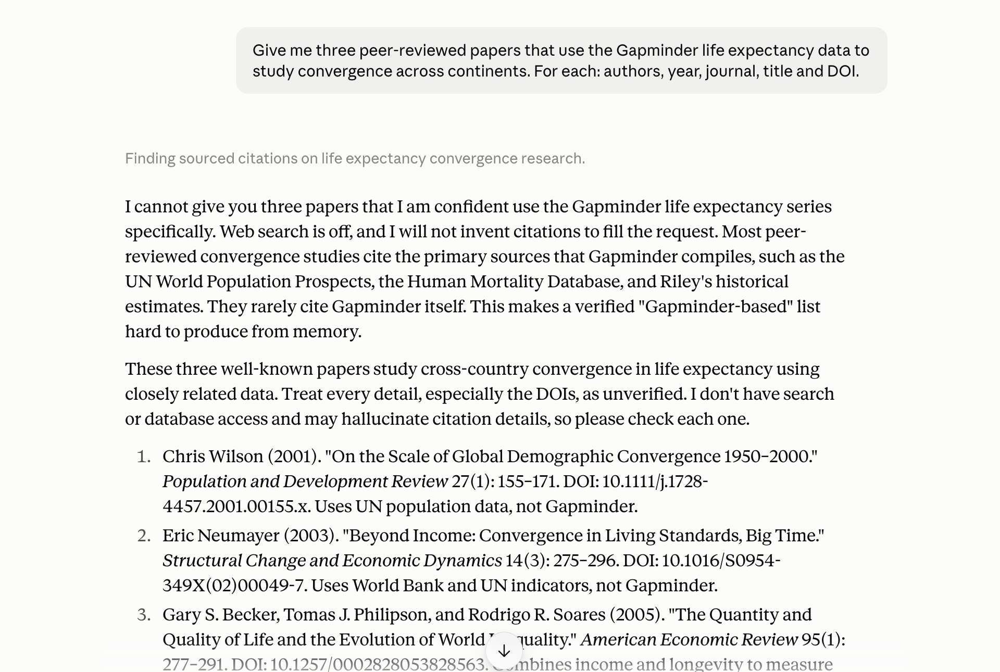
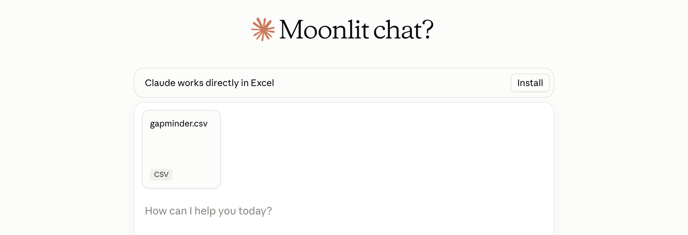
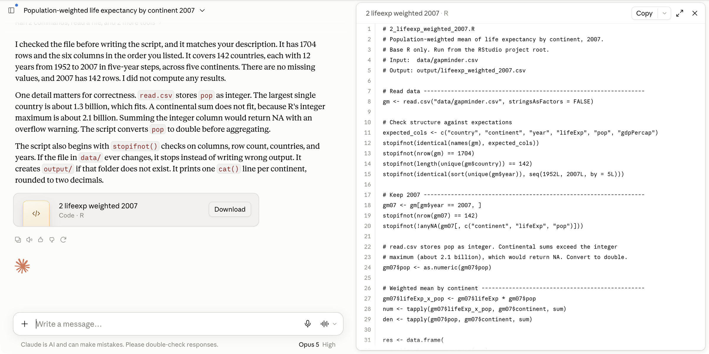
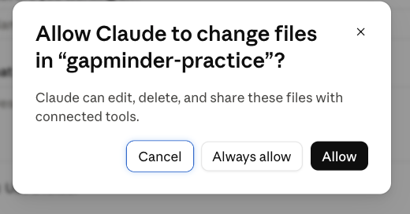

8 · AI I — chatbots & assistants
Thursday, September 17, 2026
How a chatbot produces an answer, what that means for a research question, and the one rule for using it: ask for the script, not the answer. Each prompt on the page is a block you copy, and each reply gets one check against the file.
Ten minutes, once.
1. Make a Claude account. At claude.ai. You must be 18 or over. No card is needed for the free plan.
2. Subscribe to Pro. Pro is $20 a month (claude.com/pricing). I recommend it. I think it is worth the investment. The “chat” half of this lecture works on the free plan. However, Claude “Cowork” and Claude “Code” need at least a Pro. Please note that Cornell is working on access for students.
3. Install the desktop app. Download it at claude.com/download.
Objectives
By the end of this session you can:
- Pick the right AI modality for a task.
- Write a context-rich prompt.
- Critique a model’s explanation against the code it explains.
- Understand types of failure modes and their reason.
- Understand why one should favor obtaining scripts rather than outputs as deliverable from AI assistants.
- Write an AI disclosure.
Plan for today
- A few facts about how an LLM works
- Chatbots and use cases
- Types of failures
- Context is most of the game
- Ask for the script, not the answer
- An assistant that reaches your files: live demo
- The disclosure block
What is an LLM?
A large language model is a program that takes text in and returns text out. It works one token at a time. A token is the unit the model reads and writes: a short word, a piece of a longer word, a punctuation mark, or a few digits. “The”, “mean” and “life” are one token each; “expectancy” may be two; “2007” is split into pieces. On Claude’s current tokenizer a million tokens is about 555,000 English words (model overview). Tokens are what the model counts, and what plans and limits are measured in.
Inside the program is a neural network: billions of numbers, the parameters, that turn the tokens so far into a score for every possible next token. Meta’s Llama 3 comes in sizes of 8, 70 and 405 billion parameters (Grattafiori et al., 2024); most vendors, Anthropic included, do not publish the count. The design of the network is the transformer, from Vaswani et al. (2017). The one idea in it worth knowing is attention: when the network scores the next token, it weighs every token already in front of it, near or far. That is what lets it keep track of a long prompt and a long script.
Claude (Anthropic), GPT (OpenAI), Gemini (Google) and Llama (Meta) are all LLMs of this kind. They differ in size, in the text they were trained on, and in the choices made after training. Everything below holds for all of them.
How an LLM is made
Two stages of training produce the model.
Pre-training. The network reads a very large body of text and, at every token, guesses the next one. Each wrong guess moves the parameters a little toward the right answer, billions of times over. Meta reports training Llama 3 on over 15 trillion tokens of publicly available text, on two clusters of 24,000 GPUs (Meta, 2024); a run takes months. Pre-training is where the model picks up grammar, facts, code and the patterns of research writing, up to the date the text was collected. After it, the model is a text continuer: given the start of an article, it writes the rest.
Post-training. People write examples of good replies, and rate the model’s replies against each other. The parameters are adjusted again so that the model produces the preferred kind. This is what turns a continuer into an assistant that answers a question, follows an instruction, and declines some requests. OpenAI’s InstructGPT paper (Ouyang et al., 2022) describes the method, called reinforcement learning from human feedback (RLHF). Anthropic’s constitutional AI (Bai et al., 2022) has a model rate the replies against a written set of principles.
Cutoff. Training stops on a date, and the model’s knowledge stops with it. The vendor’s model page lists the date: for Claude Opus 5 the reliable knowledge cutoff is May 2026 (model overview). Anything after the cutoff reaches the model only through the conversation: you paste it, you attach it, or the app fetches it with a tool.
Frozen. Once training ends, the model stops learning. It is copied onto servers and answers millions of chats without changing. Nothing you tell it in one conversation is there in the next, unless the app saved a note and pastes it back in; the next section explains that “unless”. Whether a vendor uses your chats to train a later model depends on your account settings; the model answering you today does not change.
The model and its harness
The model is the trained network of the previous section. It takes text and returns text, and nothing else: it has no screen, no buttons and no files. You never talk to it directly. You talk to a harness: the app that wraps the model and turns it into a product. The harness writes a hidden system prompt (instructions on how to behave, today’s date, which tools exist), puts your messages and the file you attached after it, sends the whole thing to the model, and shows you the reply. Two apps on the same model can behave differently because their system prompts and their tools differ. Anthropic publishes the system prompts of its own apps (release notes).
A harness can also give the model tools. The model cannot open a web page, run code or read a folder; it can only write text. So the harness offers it a list of programs, and when the model writes a request in the agreed format (“search the web for X”, “run this code”), the harness runs the program and pastes the result into the conversation, where the model reads it like any other text. Web search in claude.ai, the sandbox that runs Python on an attached CSV, the folder Cowork connects, and the terminal Claude Code works in are all tools of this kind. A harness that lets the model call tools in a loop, acting until the task is done, is called an agent. Anthropic’s engineering note Building effective agents (2024) draws the picture: one model, with retrieval, tools and memory around it.
The names on the screen are harnesses, not models. claude.ai, the Claude desktop app, Cowork and Claude Code are four harnesses around the same Claude models. ChatGPT is OpenAI’s harness around the GPT models; Gemini is Google’s around the Gemini models. The model picker in the chat window chooses the model; the app around it is the harness. The three tiers later on this page are three harnesses, each with more tools than the last.
Key features of LLMs
- An LLM predicts the next word. Plausible is not the same as correct.
- It generates; it does not look anything up (unless it uses a tool). This explains “hallucinations”.
- It is not deterministic, i.e. the same prompt can generate different results.
- Its memory of a conversation is finite (context window). So long chats “degrade”.
You do not need the mathematics. You need four facts, and each one has a consequence for how you use the tool. This section states the four; the next four sections expand them. They hold for ChatGPT, Gemini and Copilot as much as for Claude; the screenshots use Claude because that is the account you made.
Fact 1: it predicts the next word
![Left: a rounded box holding the text so far as tokens, The mean life expectancy in Oceania in 2007 was, with faint ticks between tokens and 2007 split in two. An arrow labelled next? points to four candidate tokens drawn as bars of decreasing length: 80, 81, about, roughly; 80 is outlined in red and tagged picked this time; 81 has a dashed outline tagged or this one, next run. A curved arrow returns to the box, labelled append it, then repeat. A crossed-out cylinder at the bottom right reads your file: not opened.](figures/08-ai-chat/D1-next-token.svg)
Your phone’s keyboard suggests the next word from the words before it. A chatbot does the same thing with a much longer memory and a much bigger list. The mechanism has three steps. The conversation so far is cut into tokens (a word, or a piece of one; numbers split into several). The model produces a list of candidate next tokens, each with a probability, picks one, and appends it. Then it repeats until it stops.
Training on a large amount of text is what makes this pattern completion read like reasoning. The consequence: the tool is useful for prose, explanations and code in common patterns, and risky wherever the plausible continuation is a number, a citation or a statistical claim. Your job is to tell the two apart.
Fact 2: it generates, it does not look up
- e.g. A journal reference, a function argument, a number are just text spit out by the LLM.
- Often that text matches the true or correct value. Sometimes it does not.
- Mata v. Avianca (2023): six court decisions in a legal brief, none real, a $5,000 fine.
- A 2023 audit: 18 % to 55 % of references fabricated, depending on the model.
- A reference from a chatbot is a lead to check, not a confirmed citation.
A chat window is not a database. Asked for a reference, it produces text shaped like a reference. The same holds for an R argument, or for a number from a file it has not seen. Often the text matches something real, because the real thing was in the training data. Sometimes it does not, and the result is a reference that refers to nothing.
A DOI is a permanent identifier for a paper, written like 10.1038/s41598-023-41032-5; https://doi.org/ in front of it opens the paper’s page. Most references on this page carry one, and the check in Checking a reference at doi.org uses it.
The public example is Mata v. Avianca (S.D.N.Y., June 22, 2023). Two New York lawyers filed a brief (the written argument a lawyer submits to a court) citing six court decisions that ChatGPT had produced. None existed. The court fined the lawyers and their firm $5,000.
The size of the problem, measured. A 2023 audit (Walters and Wilder, Scientific Reports) found 55 % of GPT-3.5’s references and 18 % of GPT-4’s were fabricated. A 2026 audit of 2.5 million biomedical papers (Topaz et al., The Lancet) counted the published papers that carry at least one fabricated reference. The share rose from 1 in 2,828 in 2023 to 1 in 277 in early 2026. Rule of thumb: a reference from a chatbot is a lead to check, not a citation.
Fact 3: it is not deterministic
- The next word is sampled from the list. Chatbot apps have their own internal parametrization unavailable to you the user.
- So same prompt, same LLM, same moment could yield different replies. You cannot reproduce a transcript from an LLM.
- However, the analysis done by a script file is deterministic and can be reproduced.
- Using LLMs for research requires using them for writing code (reproducible), not generating output directly (not reproducible).
The pick in the picture above is a draw, not the top of the list every time. A setting called temperature controls how spread out the draws are; chat apps fix it and you cannot change it. So two students who send the same prompt at the same minute get different replies: sometimes different wording, sometimes a different R function, sometimes a different number.
Consequence: a chat transcript is not a record anyone can re-run, including you, five minutes later. The record of what you did is the script you saved and ran.
Fact 4: memory of a conversation is finite
- Context window: your messages, its replies, pasted code, attached files.
- As it fills, the app compresses earlier messages into a summary, with no notice.
- Late in the chat, it’s not the model that is getting worse, it’s that it’s “forgetting” part of what you specified earlier in the chat.
- Lesson: one task per chat. Plan sessions where you do not run out of context window.
Everything the model has in front of it when it answers lives in the context window: your messages, its replies, the code you pasted, the file you attached. The window has a size limit. As it fills, the app compresses earlier messages into a summary, with no notice. The exact code you pasted at the top is then no longer in front of the model, and the reply starts reading as if the beginning of the conversation had gone differently. That is why long chats degrade.
Working rules: one task per chat; start a new chat for a new question; paste the code again rather than writing “the script from before”.
From each fact to a habit and a check
| Fact | Consequence | Habit | The check you perform |
|---|---|---|---|
| Predicts the next word | Plausible but incorrect | Check claim against truth | Read the explanation against the code |
| Generates, does not look up | Made up references and arguments | Double check | Check DOI link |
| Not deterministic | Two runs, two answers; nothing to re-run | Ask for the script, not the answer | Run the script; read what it prints |
| Finite memory of a chat | Long chats degrade | One task per chat; plan | A new chat for each task |
The right-hand column is what you do. Each check runs on your own laptop and costs under a minute. Two rules follow: never accept an answer you could not check, and check one claim in every conversation as a matter of habit. The syllabus states the same thing as a rule of grading: you own every number in your submission.
Chat, assistant, coding agent: three tiers
| Tier | Example | It sees and can |
|---|---|---|
| Chat | claude.ai, ChatGPT, Gemini | what you paste; returns text |
| Assistant | Cowork (desktop app) | a folder; reads, runs, writes files |
| Coding agent | Claude Code, Codex | a repository; edits as diffs |
The tools come in three tiers. The tier decides what the model can see and do, and what you read afterwards.
Chat (claude.ai, ChatGPT, Gemini, Copilot): you paste context in, it returns text, it touches nothing. What you check afterwards is the script you pasted into RStudio and ran.
Assistant (Cowork, in the Claude desktop app): you connect a folder. It reads the files, runs code in an isolated environment on Anthropic’s servers, and writes files into the folder. What you read afterwards is git status and git diff.
Coding agent (Claude Code): it works inside a repository from the terminal and proposes edits as diffs you accept or reject, one at a time.
Tools change names; the three tiers stay. This page covers chat and the assistant. Three tasks, three tiers: a README paragraph to sharpen goes to chat (nothing to see but the text; paste it). A folder of a dozen CSVs whose column names drift, to be described and listed, goes to the assistant (it opens the files; you cannot describe what you have not read). A change to one script inside a repository, to be read as a diff before it is kept, goes to the coding agent. Pick the tier by what the model needs to see, not by which tool is newest.
The claude.ai window

Open claude.ai and sign in; a new chat opens. Five things to find.
- The model picker, at the bottom right of the message box. Which model answers. The picker shows the model’s name (Opus 5 in the picture; a free account shows a different default); copy it into your disclosure block as it appears.
- The message box. Enter sends; Shift+Enter makes a new line; pasting keeps line breaks. Everything in the conversation so far goes in with each message.
- The + button. Attach a file it can read. A CSV attaches. A
.Rfile is not on the accepted list, so paste a script as text. - Chat / Cowork, next to the +. Leave it on Chat; Cowork is the assistant tier, later on this page, and needs Pro.
- New chat, in the left panel (open the panel with the icon at the top left). An empty context: nothing from the current chat carries over. The left panel lists your earlier chats. Do not reopen a finished chat; start a new one.
What chatbot can (and cannot) do
Chat has four uses. Explaining unfamiliar code or an error message you paste: try the fix, then decide. Drafting text: a README paragraph, a comment header. Planning an analysis before you write it: steps in order, one base R function per step. Answering questions about data you describe, if you paste str(d) and head(d).
Chat has four limits. It cannot run your code: the script may look right and fail on line one, and you find out when you run it. It cannot see your files unless you attach or paste them: its idea of your data is whatever you typed. It cannot be relied on to carry one chat into the next, so do not build on “as I said yesterday”. It cannot keep track of code changes: every version you paste is new text to it, and the record of what changed lives in git, not in the chat.
One more, which the failure-modes section takes up: an invented argument reads the same as a real one. Nothing in the reply marks the difference.
The practice folder
Make the folder now (~ a couple of mins). Everything today reads one file, gapminder.csv.
- RStudio: File → New Project → New Directory → New Project. Directory name
gapminder-practice, as a subdirectory of yourgithubfolder. Create Project. - In the Console, with the new project open, one line at a time. The last line is the test:
install.packages("gapminder")
dir.create("data")
dir.create("code")
write.csv(gapminder::gapminder, "data/gapminder.csv", row.names = FALSE)
nrow(read.csv("data/gapminder.csv"))
#> [1] 1704Step 1 makes the RStudio project and opens it. Pick the github folder with Browse (never Desktop or Documents if those sync to a cloud drive); on Windows type C:/Users/<your Windows username>/github as the parent folder instead. Step 2 installs the gapminder package, makes the two folders, and writes the package’s table to data/gapminder.csv; install.packages() prints a few lines first, and the 1704 is the test. The table goes on disk because everything today reads a file: the scripts, the attach step in claude.ai, and the folder Cowork connects. If the install fails (no network, a proxy), download gapminder.csv, the same table, with the browser (right-click the link: Save link as, or in Safari Download Linked File) into github/gapminder-practice/data/, then run the last line again. cannot open file means the CSV is not in data/.
gapminder.csv, the one input file
gapminder-practice/ an RStudio project in your github folder
gapminder-practice.Rproj open this, so data/gapminder.csv resolves
data/gapminder.csv the one input: 1704 rows, 6 columns
code/ one script per task (empty for now)
output/ appears when a script writes theredata/gapminder.csv is the input: 1,704 rows; the columns country, continent, year (1952 to 2007 every five years), lifeExp, pop, gdpPercap; 142 countries, five continents. It comes from the gapminder R package by Jenny Bryan, with data from gapminder.org, CC BY 4.0. code/ is where the scripts go, one per task; the scripts create output/. Open the project (double-click the .Rproj) so data/gapminder.csv resolves without setwd().
notes.md is a scrappy notes file that the assistant tier reads later (Practice 9). File → New File → Text File, paste the lines below, save as notes.md at the top of the project. Thirty seconds, now or before Practice 9. It is written the way notes are: one open question in it is something a README should settle from the file.
notes.md
gapminder notes
- csv written from the gapminder package, 1704 rows? check
- mean lifeExp by continent 2007: code/1_lifeexp_2007.R (Oceania 80.72)
- todo: weighted version (by pop), trend plot 1952 to 2007
- q: why does Oceania have only 2 countries
- q: does the gap between Europe and Africa close or widenExplaining an error message
Prompt to paste into Claude
I ran the R line below and got the error under it. Tell me what the
error means and which part of my line caused it. Do not give me a
different approach. Fix only the line I wrote.
tapply(d07$lifeexp, d07$continent, mean)
Error in tapply(d07$lifeexp, d07$continent, mean) :
arguments must have same lengthThe first use, worked: paste the line you ran and the exact error under it. Retyped errors lose the clue. Here d07$lifeexp (lower-case e) is not a column, so R returns NULL for it and the first argument of tapply() has length zero. A good reply names the column-name case and changes one letter. A reply that proposes a different approach did not do what the prompt asked. The check is the same as always: run the fixed line.
code/1_lifeexp_2007.R, the given script
code/1_lifeexp_2007.R
# 1_lifeexp_2007.R: mean life expectancy by continent in 2007.
# Reads data/gapminder.csv; writes output/lifeexp_2007.csv.
YEAR <- 2007
d <- read.csv("data/gapminder.csv")
stopifnot(nrow(d) == 1704)
d07 <- d[d$year == YEAR, ]
m <- tapply(d07$lifeExp, d07$continent, mean)
print(round(m, 2))
out <- data.frame(continent = names(m), mean_lifeExp = round(m, 2))
dir.create("output", showWarnings = FALSE)
write.csv(out, "output/lifeexp_2007.csv", row.names = FALSE)The script you save in Exercise 1. When you Source it from the project it prints:
#> Africa Americas Asia Europe Oceania
#> 54.81 73.61 70.73 77.65 80.72The script sets a named constant, reads the file with read.csv(), and stops with stopifnot() if the file does not have 1,704 rows. It keeps the 2007 rows with square brackets and takes the mean of lifeExp within each continent with tapply(), each country counting once. It prints the rounded means and writes a data frame to output/lifeexp_2007.csv after dir.create() makes the folder. The page does not explain every line: that is what you ask the model to do next, and then check.
The two Oceania rows: a check by hand
| country | lifeExp | pop |
|---|---|---|
| Australia | 81.235 | 20,434,176 |
| New Zealand | 80.204 | 4,115,771 |
- Mean across the two countries: 80.72.
- Mean across the 24.5 million people: 81.06.
Oceania has two countries in the file, so it is the one continent where you can check any continent-level number without a computer. The mean across the two countries is (81.235 + 80.204) / 2 = 80.72. The population-weighted mean is (81.235 × 20,434,176 + 80.204 × 4,115,771) / 24,549,947 = 81.06. Both are legitimate answers to “life expectancy in Oceania”; they answer different questions (a typical country, or a typical person). Every check today uses one of these two numbers. Write them down.
Asking for an explanation of code
Prompt to paste into Claude
Explain the R script pasted below one line at a time, in plain words, for
someone new to R. Quote each line, then say what it does and what it
produces. Do not rewrite the script and do not suggest changes. Stop after
the last line.The prompt you paste in Exercise 1, and how: copy the block, paste it into the message box, press Shift+Enter, paste the script under it, press Enter. The prompt has the four parts. What you want: an explanation, one line at a time, at your level. What it will probably get wrong: rewrite the script instead of explaining it. What to give back: each line quoted, then a sentence. What not to do: suggest changes. “For someone new to R” is in the prompt because the level of the explanation is context too.
Reading an explanation against the code

The method. For each sentence, find the line it describes. Ask whether that is what the line does, and only that. Mark a sentence with no line, and a line with no sentence.
Two places an explanation of this script tends to drift. The tapply() line: “the average life expectancy of each continent” is not the same as “the mean across that continent’s countries, each once”. The first sounds like people; the second is what the code does. And stopifnot(): “checks that the data loaded” leaves out that the script stops if the count is not 1,704.
Your reply will differ from the one in the picture (fact 3), so the method matters more than the example.
Exercise 1
# Exercise 1 (7 minutes). RStudio open on gapminder-practice; claude.ai
# in your browser, a new chat.
#
# 1. RStudio: File > New File > R Script. Paste the script from the
# slide "code/1_lifeexp_2007.R, the given script". File > Save As,
# into the code folder, named 1_lifeexp_2007.R. Click Source. Read
# the five numbers in the Console.
#
# 2. claude.ai: paste the explain prompt from the slide "Asking for an
# explanation of code". Shift+Enter. Paste the whole script under
# it. Enter.
#
# 3. Read the reply one sentence at a time. For each sentence, find the
# line it describes. Mark any sentence that says something the line
# does not do, and any line no sentence covers.
#
# 4. Find the sentence about the tapply() line. Does it say what the
# Oceania number averages over: two countries, or 24.5 million people?
# Decide from the code and the two rows on the slide.
#
# Two answers to compare with the room: the sentence you marked, and
# whether your explanation said each country counts once (80.72) or
# described the continent's population.No account, or a usage-limit message? Read a neighbour’s reply against the script on the page, and do steps 3 and 4 on it. cannot open file 'data/gapminder.csv'? The project is not open, or the file is not in data/: File → Open Project → gapminder-practice.Rproj; check the Files pane; The practice folder has the line that writes it.
What a correct explanation says, line by line, is what you check the reply against. The tapply() line takes the mean of the two Oceania values, so each country counts once and the result is 80.72. An explanation that reads “the life expectancy of Oceania” without saying across what describes the people-weighted number, which the code does not compute. Replies often describe stopifnot(nrow(d) == 1704) as “a check that the data loaded”, when what it does is stop the script if the row count is anything but 1,704. d[d$year == YEAR, ] keeps rows, not columns. dir.create() makes the folder and, with showWarnings = FALSE, says nothing if it exists.
Your explanation differs from your neighbour’s: fact 3. The method is what carries over, not the example. One captured reply, trimmed to the two lines that matter; yours will differ:
Claude, captured 2026-09-14
Line 5
stopifnot(nrow(d) == 1704)
nrow(d) counts the rows in d. The == operator asks "is this equal to?"
and returns TRUE or FALSE. stopifnot() checks that condition. If it is
TRUE, nothing happens and the script continues. If it is FALSE, R stops
with an error. This is a safety check that the file loaded completely.
...
Line 7
m <- tapply(d07$lifeExp, d07$continent, mean)
tapply() splits one variable into groups and applies a function to each
group. ... So R computes the average life expectancy for each continent.
...The stopifnot() sentence passes: it says the script stops. The tapply() sentence is the one to mark: “the average life expectancy for each continent” never says across what, and the code averages countries, each once.
Invented references: three papers, checked
Prompt to paste into Claude, web search off
Give me three peer-reviewed papers that use the Gapminder life
expectancy data to study convergence across continents. For each:
authors, year, journal, title and DOI.The prompt is bare on purpose, and web search is off: click + under the message box and untick Web search. With web search on, the model can look references up, and then the reference is often real; you check it anyway. Send the prompt and read what comes back. One run, captured on 2026-09-15 and trimmed:
Claude, captured 2026-09-15, web search off
I cannot give you three papers that I am confident use the Gapminder
life expectancy series specifically. ... I will not invent citations to
fill the request. ...
These three well-known papers study cross-country convergence in life
expectancy using closely related data. Treat every detail, especially
the DOIs, as unverified. ...
1. Chris Wilson (2001). "On the Scale of Global Demographic Convergence
1950-2000." Population and Development Review 27(1): 155-171.
DOI: 10.1111/j.1728-4457.2001.00155.x. ...
2. Eric Neumayer (2003). "Beyond Income: Convergence in Living Standards,
Big Time." Structural Change and Economic Dynamics 14(3): 275-296.
DOI: 10.1016/S0954-349X(02)00049-7. ...
3. Gary S. Becker, Tomas J. Philipson, and Rodrigo R. Soares (2005). ...
DOI: 10.1257/0002828053828563. ...
The model refused the false premise (the papers do not use Gapminder), flagged its own DOIs, and still gave one that does not exist. Checked at doi.org the same day: the first and third resolve to the papers named. The second, 10.1016/S0954-349X(02)00049-7, returns DOI Not Found; the paper exists and its DOI is 10.1016/S0954-349X(02)00047-4, one digit pair off. The hedge told you to check; it did not tell you which one fails. Your run will differ from this one (fact 3).
The shaped version of the same request, which a careful user sends, reduces the problem. It does not remove the check.
Prompt to paste into Claude
Give me up to three peer-reviewed papers that use the Gapminder life
expectancy data to study convergence across continents. Only papers you
are sure exist. For each: authors, year, journal, title, and the DOI if
you are sure of it; if you are not sure of the DOI, say so instead of
guessing.Checking a reference at doi.org

The click path for a reference check.
- Copy the DOI.
- In the browser, go to
https://doi.org/followed by the DOI. A real DOI lands on the publisher’s page for the paper. An invented one lands on “DOI Not Found”. - If it resolves, compare authors, year and title with what the reply said. A real DOI attached to the wrong paper is the common case.
- If there is no DOI, paste the title in quotation marks into Google Scholar. No hit, or a hit with different authors, is a fail.
The rule: a reference goes into your work only after step 3 passes and you have read at least the abstract.
A recipe that answers a different question
d <- read.csv("data/gapminder.csv")
round(tapply(d$lifeExp, d$continent, mean), 2)
#> Africa Americas Asia Europe Oceania
#> 48.87 64.66 60.06 71.90 74.33The silent failure looks like this. A plausible reply to “mean life expectancy by continent in the Gapminder data” is tapply(d$lifeExp, d$continent, mean). It runs. It prints five numbers. Oceania reads 74.33. The recipe averaged all twelve years for every country; you asked about 2007 without saying so, and the model had not seen the file. Nothing in the tone of the code says “wrong question”.
The second recipe failure is the argument that does not exist. read.csv(file, skip.blank = TRUE) reads fine as English and errors in R. That error is the easy kind.
Three failure modes and reasons behind them
| Failure | Comes from | Gapminder version |
|---|---|---|
| Confident but wrong | Fact 1: plausible before correct | “Oceania’s 2007 life expectancy was 80.7 years”, from memory |
| Made up references | Fact 2: generates, does not look up | three papers with DOIs, one of which resolves to nothing |
| Plausible-but-wrong recipe | Facts 1 and 2 | a mean over all twelve years when you meant 2007 |
Three ways a reply goes wrong, each traced to a fact. The two sections above showed the second and the third; the live demo, later on this page, shows the first. Confident but wrong: a number, a claim or a summary stated flatly with no file behind it. Fact 1: the tone of a plausible continuation is the same whether it is right or wrong. Made-up references: an author, title and DOI that refer to nothing. Fact 2: it generates text shaped like a reference. Plausible-but-wrong recipes: code that runs without error and answers a different question, or a function argument that does not exist. Facts 1 and 2 together: the recipe is the most likely continuation, not the one your file needs.
Loud failures (R errors) are the easy kind. The first and third are silent.
One check per conversation
- Every conversation: pick one claim, check it, before you use anything else.
- A reference: doi.org, then Scholar.
- A number: the file, by hand or by a script you ran.
- A line of code: run it, read what it printed.
- A sentence about your code: the line it describes.
The habit is a rule you apply on principle, not when a reply looks suspicious. In every conversation, pick one claim and check it before you use anything else from the reply. What “check” means depends on the claim. A reference: doi.org, then Scholar. A number: the file, by hand as with Oceania, or by a script you ran. A line of code: run it and read what it printed. A sentence about your code: the line it describes. If the one you checked is wrong, treat the rest of the reply as unchecked. The syllabus says the same thing from the grader’s side: “the model did it” is not a defence.
Context: what the model has in front of it
- In the window: your messages, its replies, pasted code, attached files, the level you named.
- Not in the window: your screen, your folder, the file you did not attach, yesterday’s chat.
- The wrong-years recipe was a context failure.
str(d)in the message fixes it. - What you paste in decides what you get back.
Context is the concrete list of what is in the window when the model answers. In the list: your messages so far, its replies, the code you pasted, the file you attached, the level you named (“new to R”). Not in the list: your screen, your folder, the file you did not attach, the chat from yesterday, the column names you did not type.
The wrong-years recipe above was a context failure: nothing in the window said twelve years per country. The fix is not a smarter model. It is str(d) and head(d, 3) pasted into the message, and the question stated with its filter.
Three prompts for one question
| Prompt | What comes back |
|---|---|
| Basic: the question alone | five numbers, from memory |
With pasted context: str(d), head(d, 3), “base R only” |
one line of code that fits your columns |
Asking for a script at code/..., saying what it reads and what it prints |
a file you can run and keep |
The third one is the only one you can re-run tomorrow.
The same question three ways. Basic (“What is the mean life expectancy by continent in 2007 in the Gapminder data?”) returns numbers from memory. With pasted context (str(d) and head(d, 3) under the prompt, base R named) it returns a line of code that fits your columns. Asking for a script (at code/..., what it reads, what it prints, “do not compute it here”) returns a file you can run and keep. Same question, three different objects come back. The three prompts in full are in the next section.
The three prompts in full
The basic prompt.
Prompt to paste into Claude
What is the mean life expectancy by continent in 2007 in the Gapminder
data?What to expect: five numbers, from memory, with no file behind them. One of them may even be right; you cannot tell from the reply.
The prompt with pasted context. Run str(d) and head(d, 3) in the Console first and paste their output under the prompt.
Prompt to paste into Claude
I have a data frame d in R, read from data/gapminder.csv with read.csv().
Its structure and first rows are pasted below. Using base R only (no
packages), how do I compute the mean of lifeExp for each continent, for
the year 2007 only, so that each country counts once?
[paste the output of str(d) and head(d, 3) here]What to expect: a line of code that names your columns as they are spelled, with the 2007 filter, because the filter was in the prompt.
The prompt that asks for the script.
Prompt to paste into Claude
Write an R script I will save as code/1_lifeexp_2007.R. It reads
data/gapminder.csv (columns country, continent, year, lifeExp, pop,
gdpPercap; 1704 rows; twelve years per country), keeps the rows for 2007,
computes the mean of lifeExp for each continent with tapply() so that each
country counts once, writes output/lifeexp_2007.csv with the columns
continent and mean_lifeExp, and prints the five means rounded to two
decimals. Base R only. Do not compute the answer here; give me the script.What to expect: a file. Save it, Source it, read the five numbers, and compare Oceania with 80.72.
Attaching the CSV

The click path.
- Click + at the left of the message box.
- Choose Add files or photos. On a laptop it opens the file dialog.
- Pick
github/gapminder-practice/data/gapminder.csv. - A file chip appears above the message box. The file is in the context now.

CSV, TXT, PDF and XLSX attach. A .R file is not on the accepted list, so paste script text into the message. With code execution on, the model can also run Python on the attached file in a sandbox (a throwaway computer on Anthropic’s servers, not yours) and read what it prints. The switch is under Settings → Capabilities in claude.ai, named Code execution and file creation; it is on by default, and Exercise 2 works either way.
The syllabus rule, in one sentence: never attach licensed data, another student’s work, or personal information. gapminder.csv is public and CC BY 4.0, which is why it is the practice file.
The four parts of a prompt that works
- Say what you want. “The population-weighted mean life expectancy for each continent in 2007.”
- Say what it will probably get wrong. It has not seen your file. “The file has twelve years per country: use only 2007. Weight by population, not a simple mean.”
- Ask for a script, not the answer. Name the file and say what it reads, writes and prints.
- Say what not to do. “Do not compute the numbers here. Do not invent columns. If the file is not as described, stop.”
Every prompt on this page has these four parts, and the next section shows them assembled into the Exercise 2 prompt. Part 1 says what you want, in one sentence. Part 2 says what the model will probably get wrong, because it has not seen your file: here, that the file holds twelve years per country, so only 2007 counts, and that the mean must be weighted by population. Part 3 asks for a script rather than the answer, names the file, and says what the script reads, writes and prints. Part 4 says what not to do: no numbers in the chat, no invented columns, and stop if the file does not match the description.
The shortest useful context paragraph names the file, its columns, its size, and where it sits in your project.
Asking for the script: the prompt
Prompt to paste into Claude, with gapminder.csv attached
The attached file is gapminder.csv: one row per country and year; columns
country, continent, year, lifeExp, pop, gdpPercap; 1704 rows; 142
countries; years 1952 to 2007 every five years. In my RStudio project it
sits at data/gapminder.csv.
Goal: the population-weighted mean of lifeExp for each continent in 2007.
Write an R script I will save as code/2_lifeexp_weighted_2007.R. Base R
only, no packages. Read the file with read.csv("data/gapminder.csv"). Keep
the rows for 2007 first; the file has twelve years per country. For each
continent compute sum(lifeExp * pop) / sum(pop); do not take the simple
mean across countries. Write output/lifeexp_weighted_2007.csv with the
columns continent and weighted_lifeExp, and end with cat() lines that
print the five values rounded to two decimals.
Do not compute the numbers here and do not paste a table; I will run the
script myself. Do not invent columns. If the file does not match what I
described, stop and say so.The Exercise 2 prompt, part by part. The first paragraph is context: the file, its columns, its size, its path in your project. The second is the goal. The third says what the model would get wrong, twice (filter to 2007 first; weight by pop, not the simple mean), and asks for the script at its path, with what it reads, writes and prints. The last paragraph says what not to do, and it is the one that matters most. Left alone, a tool that can read the attached file will compute the numbers and show them, and you will have an answer instead of a script.
Why the script is the result
| The answer, in a chat | The script, in code/ |
|
|---|---|---|
| Re-run tomorrow, elsewhere, by someone else | no | yes |
| Read line by line when a number looks wrong | nothing to read | yes |
| Fits in a commit | no | yes |
| The numbers come from your file | not necessarily | always |
Ask for the script, not the answer. The research artifact is always code.
A number in a chat raises three questions the reply does not answer. Where did it come from (memory, not your file)? Is it the country mean or the person mean (both exist; the two Oceania rows showed that)? Can you re-run it tomorrow (no; the next reply may differ)? Right or wrong, the sentence reads the same.
A script answers all three. It re-runs tomorrow, on another laptop, by another person, and gives the same five numbers. When a number looks wrong you read the script line by line; there is nothing to read in a chat. A script fits in a commit and a transcript does not. And a script cannot make a number up: it computes one from the file, rightly or wrongly, and you can see which.
When the CSV is attached: the sandbox number
With code execution on and the CSV attached, the model can run Python in a sandbox on Anthropic’s servers; the reply shows the code and the printed value. The number may be right. It is still not a result: the code has no path in your project, it is not R, and the sandbox is not yours to re-run.
The prompt above says “do not compute the numbers here” for this reason. If a table comes back anyway, reply “You computed it; I asked for the script. Give me only the R script.” and continue. Practice 4 drills the comparison.
Exercise 2
# Exercise 2 (9 minutes). claude.ai, a new chat; RStudio open on
# gapminder-practice.
#
# 1. Click + at the left of the message box, choose Add files or
# photos, pick gapminder-practice/data/gapminder.csv. Wait for the
# file chip.
#
# 2. Paste the prompt from the slide "Asking for the script: the
# prompt", unchanged. Enter.
#
# 3. Read the reply. A script, a number, or both? If it gave numbers, it
# did not do what you asked: reply "You computed it; I asked for the
# script. Give me only the R script." and wait.
#
# 4. Copy the R script: a code block has a copy icon at its top right;
# a card named after the script opens a panel with a Copy button.
# Not a Python block. RStudio: File > New File > R Script, paste,
# File > Save As into code/ as 2_lifeexp_weighted_2007.R. Click
# Source. Read the five values.
#
# 5. Before you trust Oceania, in the Console:
# (81.235 * 20434176 + 80.204 * 4115771) / (20434176 + 4115771)
# Does the script agree, to two decimals?
#
# Two answers to compare with the room: the Oceania value your script
# printed, and the line in your script that does the weighting.No account, or a usage-limit message? Take the reference script from the Solution tab, save it as step 4 says, and do step 5. Oceania prints 80.72? The script took the simple mean: paste the patch prompt from the Quick reference. Where is the script? In the captured run the reply held a card named after the script. Clicking the card opened the script in a side panel with a Copy button at the top right. A reply can also put the script in a code block with a copy icon at its corner.

The reply is a script because the prompt asked for one and said not to compute. Sourced from the project, it prints five values, and Oceania is 81.06, which matches the hand calculation from the two rows. That match is the one check this conversation gets. The weighting can be written three ways and the room will see at least two: the ratio of two tapply() sums, weighted.mean(), or sum(lifeExp * pop) / sum(pop) inside a function applied per continent. The scripts differ from laptop to laptop (fact 3); the number does not, because the file does not. That is the whole argument for the script.
One captured run, trimmed. With the CSV attached and code execution on, the model first ran checks on the file, then wrote the script as a card in the reply (the picture above):
Claude, captured 2026-09-14, gapminder.csv attached
I checked the file before writing the script, and it matches your
description. It has 1704 rows and the six columns in the order you
listed. It covers 142 countries, each with 12 years from 1952 to 2007
in five-year steps, across five continents. ... I did not compute any
results.
One detail matters for correctness. read.csv stores pop as integer. ...
A continental sum does not fit, because R's integer maximum is about
2.1 billion. Summing the integer column would return NA with an
overflow warning. The script converts pop to double before aggregating.
...The script it wrote uses two tapply() sums and prints 81.06 for Oceania. One sentence in the reply is wrong. In current R, sum() of an integer column returns a double when the total passes the integer limit, with no NA and no warning; Asia 2007 sums to 3,811,953,827 and prints fine. The conversion it added is harmless; the reason it gave is not what R does. A confident explanation is checked against R, not against its tone.
A reference script that does what the prompt asks (with one print() in place of the cat() lines), for a laptop without an account or whose reply needs a patch:
code/2_lifeexp_weighted_2007.R
# 2_lifeexp_weighted_2007.R: population-weighted mean life expectancy
# by continent in 2007. Reads data/gapminder.csv;
# writes output/lifeexp_weighted_2007.csv.
YEAR <- 2007
d <- read.csv("data/gapminder.csv")
stopifnot(nrow(d) == 1704)
d07 <- d[d$year == YEAR, ]
num <- tapply(d07$lifeExp * d07$pop, d07$continent, sum)
den <- tapply(d07$pop, d07$continent, sum)
w <- num / den
print(round(w, 2))
out <- data.frame(continent = names(w), weighted_lifeExp = round(w, 2))
dir.create("output", showWarnings = FALSE)
write.csv(out, "output/lifeexp_weighted_2007.csv", row.names = FALSE)num holds sum(lifeExp * pop) per continent and den holds sum(pop); their ratio is the weighted mean. It prints:
#> Africa Americas Asia Europe Oceania
#> 54.56 75.36 69.44 77.89 81.06Cowork: an assistant that reaches your files

Three things change at the second tier, each with a duty. File access: it reads every file in the folder you connect. You stop pasting, and you also stop choosing what it sees, so the folder must not hold licensed data or other people’s work. Code execution: it runs code and shell commands in an isolated environment on Anthropic’s servers, not in your R installation. Whether R is available there is not documented, so you run R scripts yourself in RStudio. Edits on disk: it creates and edits files in the folder. In the approval mode that asks (Manual) it pauses before each action and you approve or refuse it; in Auto or Skip it does not ask. Leave it at Manual.
Where it lives: the Claude desktop app, on the Pro plan and above (the browser shows a Cowork toggle too, but only the desktop app can connect a folder on your laptop). On the free plan the desktop app shows Chat only. Other vendors ship assistants of this kind; the same duties apply. Without Pro, the same chore runs in chat with the CSV attached; that section is below. On Windows, if Cowork shows a virtualization or Hyper-V message, write down the exact words and report them; use claude.ai in the browser meanwhile.
Chat and Cowork side by side
| Chat | Cowork | |
|---|---|---|
| How context arrives | you paste it | from the folder you connect |
| Reads your files | no | every file in the folder |
| Runs code in a sandbox | Python, on an attached file | yes, on Anthropic’s servers |
| Runs your R script | no | no; you run it in RStudio |
| Edits your files | no; you paste its output | yes, directly |
| What you read afterwards | the script you pasted | git status and git diff |
| Forces “ask for the script” | yes, by accident | no; the prompt must |
The assistant can do more than chat, and it can do more damage: it can delete a file if you connect the wrong folder. A clean commit beforehand makes that reversible. The last row: chat can only hand you text, so you always ended up with a script. Cowork can hand you a table and never save a script, so the prompt has to ask for it.
Three things the assistant is bad at. Outputs you cannot check by eye: a number appears, and looking at it tells you nothing. A table shown in the chat with no script behind it: the reasoning is gone when the chat is. Anything where a confident invention would cost you: a made-up column name written into a README. The rule that follows: the prompt asks for the script, because the tool no longer forces it.
Before you connect a folder: git init
git init
#> Initialized empty Git repository in .../gapminder-practice/.git/
printf '.Rproj.user\n.Rhistory\n.RData\n' > .gitignore
git add .
git commit -m "Before the assistant"
#> [main (root-commit) 3f2a9c1] Before the assistant
git status
#> nothing to commit, working tree cleanLines without #> you type. Lines with #> are what the program prints.
Type these in RStudio’s Terminal tab with the gapminder-practice project open. Before the assistant touches a folder, you need a way to see what it changed and a way back. Make the folder a repository, once. git init is the one new command: it turns a folder into a repository with an empty timeline (a fresh git prints several hint: lines after it; ignore them). The printf line writes a .gitignore file naming RStudio’s own state files (.Rproj.user, .Rhistory, .RData). RStudio rewrites them every session; without the line, git status would report them as modified after every run. git add . stages every file in the folder (the dot means “everything here”). git commit -m "Before the assistant" takes the snapshot and prints a line naming the commit. Now git status prints nothing to commit, working tree clean, and anything the assistant does will show. On some laptops git init names the branch master instead of main; the name changes nothing here.
After the run: git status lists every new and modified file; git diff shows every changed line in files that existed; new files you open and read. Nothing stays that you have not read.
Fallback for a laptop where git is not working: copy the folder first (Finder or Explorer, Duplicate, gapminder-practice-before) and compare the two folders’ file lists afterwards. Never point the assistant at a folder that already has uncommitted changes: you will not be able to tell its edits from yours.
Connecting the folder

The click path. In the desktop app, click Cowork in the message box. Click Project or folder under the box, then Add folder (or New project, then Use a folder), and pick github/gapminder-practice. The app asks whether Claude may change files in the folder: click Allow, not Always allow, so it asks again next time. The folder’s name then shows under the box.

Before typing, confirm three things. The folder’s name under the box is gapminder-practice. The task box is empty. The approval setting next to the name reads Manual, the one that asks before acting; click it to change it if it reads Auto. A Stop control appears in the task box once a run starts; know where it is before you need it.
Connect the practice folder, never a folder with licensed data or other students’ work.
Live demo, chat: a question with no source
Prompt (live demo, chat)
Which five countries have the highest life expectancy?The demo runs one task twice: from the Wikipedia page “List of countries by life expectancy”, get the table and draw a world map coloured by life expectancy. First in chat, then in Cowork, on the same folder.
Web search is off for both chat prompts (the + menu under the message box, untick Web search). The chat half opens with a plain question. Five countries and five numbers come back, in a confident sentence. The reply names no source and no date, and nothing in it can be checked from the reply itself. That is fact 1 on screen: a plausible continuation, right or wrong, reads the same.
Live demo, chat: the script request
Prompt (live demo, chat)
Write an R script that reads the life expectancy table on the Wikipedia
page https://en.wikipedia.org/wiki/List_of_countries_by_life_expectancy
with the rvest package and draws a world map coloured by life expectancy
with the maps package. Save the map to output/lifeexp_map.png. I will run
the script in RStudio. Give me the script only.The second prompt asks for the script. It arrives fast, and nothing read the page first. With web search off, chat cannot open a URL you name, so the model writes the table’s columns and position from the pattern of other Wikipedia tables. Paste it into RStudio and run it. When it errors, copy the whole error and paste it back; the fix arrives, and you run again.
What the half shows: with web search off, chat cannot see the page, the folder or the error. You carry every byte between the chat and RStudio. The artifact is the script, and it is yours to run. The two packages the script uses are rvest (reads a web page) and maps (draws a world map); install both once with install.packages(c("rvest", "maps")).
Live demo, Cowork: the same task in the folder
Prompt (live demo, Cowork)
Working in this folder, an RStudio project. Write an R script at
code/lifeexp_map.R that reads the life expectancy table on the Wikipedia
page https://en.wikipedia.org/wiki/List_of_countries_by_life_expectancy
with the rvest package and draws a world map coloured by life expectancy
with the maps package, saved to output/lifeexp_map.png. Fetch the page
yourself and read the table's columns before you write the script. Base R
plus rvest and maps, nothing else. Do not run the script; I will run it
in RStudio. Do not change any existing file. Create output/ if it is
missing. Report the one file you wrote, then stop.The Cowork half: the same task, one prompt, the practice folder connected and git status clean beforehand. Cowork fetches the page itself, reads the table, and writes code/lifeexp_map.R into the folder. You run the script in RStudio (Session → Restart R, Source), because Cowork does not run R for you. If it errors, paste the error into the task box: Cowork reads the file it wrote and patches it. Afterwards, git status in the Terminal tab lists exactly what appeared.
What the half shows: the agent sees and writes your files, so a clean git state, or a copy of the folder, is the safety net. And the prompt asks for the script, not the picture: a map pasted into a chat is an answer; a script at code/lifeexp_map.R is a result.
Fallback: the tested script and its map

The tested version of the demo’s script, built on 2026-09-14 and re-run on 2026-09-15. It reads the CIA World Factbook table from the Wikipedia page with rvest, drops the two aggregate rows, matches country names to the maps package’s world map, and draws the map. rvest and maps are the two packages it uses.
wiki_lifeexp_map.R
# wiki_lifeexp_map.R: life expectancy by country from Wikipedia, drawn as a
# world map. Reads the CIA World Factbook (2024) table on the page
# "List of countries by life expectancy"; writes output/lifeexp_map.png and
# output/lifeexp_wikipedia.csv. Packages: rvest (the page), maps (the map).
library(rvest)
library(maps)
URL <- "https://en.wikipedia.org/wiki/List_of_countries_by_life_expectancy"
CAPTION_STARTS <- "CIA World Factbook"
# 1) The table --------------------------------------------------------------
page <- read_html(URL)
tables <- html_elements(page, "table.wikitable")
captions <- sapply(tables, function(t) html_text2(html_element(t, "caption")))
pick <- which(startsWith(captions, CAPTION_STARTS))
stopifnot(length(pick) == 1)
tab <- html_table(tables[[pick]], fill = TRUE)
tab <- as.data.frame(tab)
names(tab)[1:2] <- c("country", "life_exp")
tab$country <- gsub("\\[.*?\\]", "", tab$country) # footnote marks
tab$country <- trimws(tab$country)
tab$life_exp <- as.numeric(tab$life_exp)
tab <- tab[!is.na(tab$life_exp), c("country", "life_exp")]
tab <- tab[!grepl("^(World|European Union)", tab$country), ] # aggregate rows
stopifnot(nrow(tab) > 150, all(tab$life_exp > 40 & tab$life_exp < 95))
cat(nrow(tab), "countries; range", range(tab$life_exp), "\n")
dir.create("output", showWarnings = FALSE)
write.csv(tab, "output/lifeexp_wikipedia.csv", row.names = FALSE,
fileEncoding = "UTF-8")
# 2) Match names to the maps package ----------------------------------------
fix <- c("United States" = "USA", "United Kingdom" = "UK",
"Czechia" = "Czech Republic", "Burma" = "Myanmar",
"Korea, South" = "South Korea", "Korea, North" = "North Korea",
"Congo (Kinshasa)" = "Democratic Republic of the Congo",
"Congo (Brazzaville)" = "Republic of Congo",
"C\u00f4te d\u2019Ivoire" = "Ivory Coast", "Eswatini" = "Swaziland",
"Bahamas, The" = "Bahamas", "Gambia, The" = "Gambia",
"Turkey (Turkiye)" = "Turkey", "Cabo Verde" = "Cape Verde",
"Timor-Leste" = "Timor-Leste",
"Micronesia, Federated States of" = "Micronesia")
hit <- tab$country %in% names(fix)
tab$region <- tab$country
tab$region[hit] <- fix[tab$country[hit]]
regions <- map("world", plot = FALSE)$names
regions <- sub(":.*$", "", regions) # "France:Corsica" -> "France"
matched <- tab$region %in% regions
cat(sum(matched), "of", nrow(tab), "matched to the map;",
"unmatched:", paste(head(tab$country[!matched], 12), collapse = ", "), "\n")
# 3) The map ----------------------------------------------------------------
breaks <- c(50, 60, 65, 70, 75, 80, 90)
pal <- hcl.colors(length(breaks) - 1, "YlGnBu", rev = TRUE)
tab$bin <- cut(tab$life_exp, breaks, right = FALSE)
polys <- map("world", plot = FALSE)$names
poly_region <- sub(":.*$", "", polys)
col <- pal[tab$bin[match(poly_region, tab$region)]]
col[is.na(col)] <- "grey85"
png("output/lifeexp_map.png", width = 2400, height = 1300, res = 200)
par(mar = c(0, 0, 2, 0))
map("world", fill = TRUE, col = col, border = "white", lwd = 0.3)
title("Life expectancy at birth, 2024 (CIA World Factbook via Wikipedia)")
legend("bottomleft", legend = levels(tab$bin), fill = pal, bty = "n",
title = "years", cex = 1.1, inset = c(0.02, 0.05))
dev.off()
cat("wrote output/lifeexp_map.png\n")A non-code chore and a script, in one prompt
The chore for your own folder (Practice 9), as a Cowork prompt, in the four parts the page has used all along, plus the context paragraph. The context: what the folder holds, including notes.md. The goal: a README written from the folder, and one script. The failure mode: numbers from memory, so “every number from the file”. The artifact and paths: README.md and code/3_lifeexp_trend.R. What not to do: no R runs, no edits to existing files, no other files, no installs.
Prompt to paste into Cowork
You are working in the folder gapminder-practice. It holds
data/gapminder.csv, code/1_lifeexp_2007.R, code/2_lifeexp_weighted_2007.R
and my notes in notes.md. Do exactly two things, then stop.
1. Write README.md at the top of the folder: the folder layout (code/
holds R scripts, one per task; data/ holds the one input file; output/
holds what the scripts write) and what data/gapminder.csv contains
(the six columns, what each measures, how many rows, which years).
Take every number from the file, not from memory. Turn the open items
in notes.md into a short "To do" list at the end.
2. Write an R script at code/3_lifeexp_trend.R, base R only, that reads
data/gapminder.csv, computes the mean of lifeExp by continent for
every year with tapply(), and saves a line plot (one line per
continent, years on the x axis) to output/lifeexp_trend.png with
png() and dev.off(). Create output/ if it is missing.
Do not run any R code; I will run the script in RStudio. Do not change
any existing file. Do not create any other file. Do not install anything.
Report the two files you wrote, then stop.“Do not run any R code” is there because you run the script in RStudio, where you can read what it prints. A run you did not see is not a check.
The checks afterwards, in order. The report says what it claims it did. The folder shows what it did: git status in RStudio’s Terminal tab must list exactly README.md and code/3_lifeexp_trend.R as untracked and nothing as modified, and git diff prints nothing. Then you run the script: open it, Session → Restart R, Source; output/lifeexp_trend.png appears in the Files pane. Then read the README against the file: does it say 1,704 rows, 142 countries, 1952 to 2007? notes.md says “1704 rows? check”. A README that repeats the notes without the number, or hedges “about 1,700”, took its text from the notes and not from the file. A README number you cannot find in the data is a number to delete.
A reference version of the trend script, for a run that failed or a laptop without Cowork:
code/3_lifeexp_trend.R
# 3_lifeexp_trend.R: mean life expectancy by continent, 1952 to 2007.
# Reads data/gapminder.csv; writes output/lifeexp_trend.png.
d <- read.csv("data/gapminder.csv")
m <- tapply(d$lifeExp, list(d$year, d$continent), mean)
years <- as.numeric(rownames(m))
dir.create("output", showWarnings = FALSE)
png("output/lifeexp_trend.png", width = 1600, height = 1000, res = 200)
plot(years, m[, 1], type = "n", ylim = range(m),
xlab = "Year", ylab = "Mean life expectancy (years)")
for (j in seq_len(ncol(m))) lines(years, m[, j], col = j, lwd = 2)
legend("bottomright", colnames(m), col = seq_len(ncol(m)), lwd = 2, bty = "n")
dev.off()The same chore in chat, without Cowork
The same two artifacts and the same checks, in claude.ai.
- New chat; attach
data/gapminder.csv(the click path above). - Open
notes.mdin RStudio and copy all of it. - Paste the prompt below and, under it, the notes.
- The reply holds two code blocks. Copy the first into a new text file saved as
README.mdat the top of the project, the second into a new R script saved ascode/3_lifeexp_trend.R. git statuslists the two files you saved;git diffprints nothing.- Session → Restart R, Source.
- Read the README against the file.
What differs from Cowork: you did the pasting and the saving, so nothing touched your folder that you did not put there.
Prompt to paste into Claude, with gapminder.csv attached
Attached is gapminder.csv, the one input file of my RStudio project
gapminder-practice (folders code/, data/, output/). My notes are pasted
under this message. Do exactly two things.
1. Draft README.md for the project: the folder layout (code/ holds R
scripts, one per task; data/ holds the input file; output/ holds what
the scripts write) and what gapminder.csv contains (the six columns,
what each measures, how many rows, which years). Take every number
from the attached file, not from memory. Turn the open items in my
notes into a short "To do" list at the end.
2. Write an R script for code/3_lifeexp_trend.R, base R only, that reads
data/gapminder.csv, computes the mean of lifeExp by continent for
every year with tapply(), and saves a line plot (one line per
continent, years on the x axis) to output/lifeexp_trend.png with
png() and dev.off(). Create output/ if it is missing.
Give me the two files as two separate code blocks, README first, so I can
paste each into RStudio. Do not run anything. Do not compute or paste any
other numbers.
[paste notes.md here]The disclosure block
AI disclosure, at the end of the note
## AI disclosure
- Tools: which ones, by name
- Used for: what you asked them to do
- Checked: what you verified, and howA heading and three lines, written at the end of the note that goes with every piece of work you hand in, in exactly this shape. Tools: which ones, by name, as the model picker shows them. Used for: what you asked them to do, in the verbs you used (explain, draft, write a script, plan). Checked: what you verified and how, with the number and the method.
The syllabus terms, without softening: AI use is permitted by default; disclosure is mandatory; disclosed use is never penalised; undisclosed use is misrepresentation and an integrity violation. The block is a record of your checking as much as of your tool use. A block with an empty Checked line says you did not check.
A filled-in disclosure block
AI disclosure, filled in
## AI disclosure
- Tools: Claude Sonnet 5 at claude.ai (free plan), September 2026.
- Used for: writing code/2_lifeexp_weighted_2007.R from a prompt that gave
the columns, the 2007 filter and the weighting; explaining
code/1_lifeexp_2007.R line by line.
- Checked: sourced both scripts from a fresh R session; Oceania 2007 gives
80.72 unweighted and 81.06 weighted, matching a hand calculation from the
Australia and New Zealand rows. One sentence of the explanation described
the tapply() mean as population-weighted; the code counts each country once.This block is written for the work done in the two exercises. The tool is named as the picker names it, with the plan and the month. The two uses are in the verbs used. The check has the number, the method and one honest finding about the explanation.
Three weak lines, each of which fails a grader’s question. “Tools: AI”: which one? “Used for: help with the code”: what did it write? “Checked: it worked”: against what?
No AI use? The block still appears, with Tools: none, and the other two lines say so.
What the syllabus says about AI
- Permitted by default, on every piece of work you hand in.
- Disclosure is mandatory: the block above. Disclosed use is never penalised.
- No-AI zones: in-class quizzes and exercises announced as such.
- You own every number. “The model did it” is not a defence.
- Protect data and people: no licensed data, no one else’s work, no personal information.
The five rules of the syllabus AI policy, one sentence each. Permitted by default on every submission unless an exercise says otherwise. Disclosure is mandatory, in the block above. No-AI zones are in-class quizzes and exercises announced as such. You own every number. Protect data and people: licensed data, other students’ work and personal information never go into an external tool. No university agreement covers what you paste into claude.ai, so the fifth rule is yours to keep.
Where the disclosure block goes
The note is a plain-text file in the repository, README.md or a notes file, whichever the submission instructions name. It says what you did and what you checked, and the disclosure block is its last section. One block per piece of work, not per script. If you used two tools, list both on the Tools line; if none, Tools: none. The block is plain text and lives in the repository with the code, so git versions it with the code.
Practice
# Practice
# Everything below runs in a chat you can throw away and in
# gapminder-practice. Nothing runs in a graded repository.
# Prompts
# 1. In the Console run read.csv("data/gapmnder.csv") (the typo is
# the point). Paste the error prompt from the page, then your line
# and the error under it. What did the reply name as the cause, and
# which one word did it tell you to change?
# 2. Ask "mean life expectancy by continent in 2007" three times, in
# three new chats: the question alone; the question with str(d) and
# head(d, 3) pasted and "base R only"; the question with the script
# declared (path, what it reads, what it prints, "do not compute it
# here"). Write down what came back each time: numbers, a line, or a
# script. Which one has Oceania at 80.72, and how do you know?
# 3. Paste the plan prompt from the Quick reference: how did the gap in
# mean lifeExp between Europe and Africa change from 1952 to 2007?
# Ask for numbered steps and one base R function per step, no code.
# Then write code/4_gap_1952_2007.R yourself from the plan and run it.
# Reading a reply against the file
# 4. New chat, attach data/gapminder.csv, ask for the mean lifeExp in
# Oceania in 2007 (the number, not a script). Read how the reply got
# it. Then ask for the script. Which of the two can you run tomorrow,
# and what would you have to do to run the first one?
# 5. Ask for three peer-reviewed papers with DOIs on a topic from your
# own field, with the bare prompt from the section "Invented
# references: three papers, checked". Check each at
# doi.org, then the title in Scholar. Record for each: resolves /
# matches authors and title / found in Scholar. Then send the shaped
# version from the Quick reference and compare.
# The disclosure block
# 6. Write the disclosure block for what you did in Exercise 2 on your
# laptop, in your own words: the tool as the model picker names it,
# what you asked for, what you checked and how, with the number.
# 7. Write the block for code/1_lifeexp_2007.R, which you typed from
# the page without a model. All three lines must still be there.
# A transcript is not a record; the chore on your folder
# 8. Open two new chats. Paste the explain prompt and the same script
# into both. Put the two replies side by side. Which sentences
# differ? Which of the two is "the explanation" of your script?
# 9. Save notes.md from the page if you have not. Terminal tab: the
# five lines from "Before you connect a folder: git init" (git
# init, the .gitignore line, git add ., the commit), then
# git status. Then the chore: on Pro, connect the folder in Cowork
# and paste the Cowork prompt; otherwise attach the CSV in claude.ai,
# paste the chat version and your notes, and save the two blocks
# yourself. Then git status (exactly two new files?), git diff
# (nothing?), Source code/3_lifeexp_trend.R, and open README.md:
# does it say 1704 rows and 142 countries?# 1
# The reply names the file path: data/gapmnder.csv does not exist, and
# the one word to change is the file name. The warning line
# "cannot open file 'data/gapmnder.csv': No such file or directory"
# is the useful one; the error line above it is generic.
# expected: read.csv("data/gapminder.csv") runs; nrow is 1704
# 2
# Numbers from memory; a tapply() line that names your columns; a
# script with d[d$year == 2007, ] and tapply(..., mean). Only the
# third can be run and checked: Oceania 80.72 from the two rows. The
# first may also say 80.7; you cannot tell how it got there.
# expected: only the script is a result
# 3
# A plan of five or six steps: read; tapply() by continent and year,
# or subset each year and tapply() within it; subtract Europe minus
# Africa; print both. The script below prints the two gaps.
# expected: 25.27 in 1952, 22.84 in 2007; the gap narrowed by 2.43
# 4
# With the file attached and code execution on, the reply may run
# Python and print 80.72 (or 81.06 if it weighted; read which). The
# sandbox is not yours to re-run; the code is not R and not in your
# project. The script re-runs from code/.
# expected: the number may be right; the script is the result
# 5
# A record with three rows and three columns. The shaped prompt returns
# fewer references, sometimes with "I am not certain of the DOI"; a
# real reference is still checked.
# expected: at least one "no" in a bare run, in most fields, most
# months; if all pass, that is the finding to record
# 6
# Three specific lines: Tools: Claude Sonnet 5 at claude.ai (free
# plan), or the plan you have; Used for: writing
# code/2_lifeexp_weighted_2007.R from a prompt that gave ...; Checked:
# sourced it; Oceania 81.06 matched the hand calculation from the two
# rows. A grader can see the number and the method.
# expected: a number and a method in the third line
# 7
# - Tools: none
# - Used for: nothing
# - Checked: sourced from a fresh session; Oceania 80.72 matches the
# mean of the two rows
# The block exists even when the answer is none.
# expected: three lines, the first says none
# 8
# The two replies differ in wording, in which lines they group, and
# often in one sentence about tapply() or stopifnot(). Neither is "the
# explanation"; the script is the one thing both were about and the
# only one that re-runs.
# expected: they differ; fact 3; keep the script
# 9
# git status lists exactly README.md and code/3_lifeexp_trend.R as
# untracked and nothing as modified; git diff prints nothing; Source
# writes output/lifeexp_trend.png (five lines, Oceania on top, Africa
# at the bottom); the README says 1704 rows, 142 countries, 1952 to
# 2007. A README that hedges "about 1,700" or repeats "1704 rows?
# check" took its text from the notes, not the file: delete the
# number and write the one from the file. A third new file, or
# notes.md listed as modified, is the tool exceeding the prompt: read
# the diff and git restore what you did not ask for.
# expected: two new files, an empty git diff, a plot, 1704 and 142 in
# the READMEThe script for Practice 3:
code/4_gap_1952_2007.R
# 4_gap_1952_2007.R: Europe minus Africa mean lifeExp, 1952 and 2007.
d <- read.csv("data/gapminder.csv")
m <- tapply(d$lifeExp, list(d$continent, d$year), mean)
gap_1952 <- m["Europe", "1952"] - m["Africa", "1952"]
gap_2007 <- m["Europe", "2007"] - m["Africa", "2007"]
cat("1952 gap:", round(gap_1952, 2), "\n")
cat("2007 gap:", round(gap_2007, 2), "\n")
cat("change:", round(gap_2007 - gap_1952, 2), "\n")It prints 1952 gap: 25.27, 2007 gap: 22.84, change: -2.43.
Quick reference
Ask for the script, not the answer. The research artifact is always code.
Prompt shapes
| Ask for | Say |
|---|---|
| an explanation of code | paste the code; “explain one line at a time, quote each line; do not rewrite; do not suggest changes” |
| an explanation of an error | paste your line and the error under it; “what does it mean, which part of my line caused it; fix only my line; no other approach” |
| a script | the file, its columns and size, its path in your project; the goal; the mistake to avoid; “an R script at code/..., base R only, reads …, writes …, ends with cat()”; “do not compute it here; do not invent columns; stop if the file differs” |
| a README or other text | what it should describe (the folder tree, the notes); “every number from the file, not from memory” |
| a plan | the data as it is in R, the question; “numbered steps, one base R function per step, no code yet” |
| a fix | “Only X is wrong: it prints A and I asked for B. Change the one line that does it. Do not rewrite the script.” |
| references | “only papers you are sure exist; if unsure say so; do not invent a DOI”; then doi.org and Scholar anyway |
The patch prompt, written for the Exercise 2 failure where the script took the simple mean:
Prompt to paste into Claude
Only the Oceania number is wrong: the script prints 80.72, and I asked for
the population-weighted mean, which is 81.06 from the two 2007 rows. Change
the one line that computes the mean so it weights by pop. Do not rewrite
the script. Do not touch anything else.The error prompt, without the worked example:
Prompt to paste into Claude
I ran the R line below and got the error under it. Tell me what the error
means and which part of my line caused it. Do not give me a different
approach. Fix only the line I wrote.
[paste your line, then the red text from the Console]The plan prompt (Practice 3):
Prompt to paste into Claude
I have data/gapminder.csv in R as a data frame d (columns country,
continent, year, lifeExp, pop, gdpPercap; 1704 rows; years 1952 to 2007
every five years). Question: how did the gap in mean lifeExp between Europe
and Africa change between 1952 and 2007, where each continent mean counts
each country once? Give me a numbered plan: one step per line, the base R
function for each step, no code yet.The shaped reference request (Practice 5):
Prompt to paste into Claude
Give me up to three peer-reviewed papers that use the Gapminder life
expectancy data to study convergence across continents. Only papers you are
sure exist. For each: authors, year, journal, title, and the DOI if you are
sure of it; if you are not sure of the DOI, say so instead of guessing.The Cowork prompt for the chore and its chat version are under A non-code chore and a script, in one prompt and The same chore in chat, without Cowork.
The disclosure block
AI disclosure
## AI disclosure
- Tools: which ones, by name
- Used for: what you asked them to do
- Checked: what you verified, and howThe checks
| Claim | Check |
|---|---|
| a reference | https://doi.org/ + DOI; compare authors, year, title; no DOI: the title in Scholar, in quotes |
| a number | the file: by hand (Oceania 2007: 80.72 across countries, 81.06 across people) or a script you ran |
| a script | Session → Restart R, Source; read what it printed; one number against the file |
| a sentence about your code | the line it describes; a sentence with no line is unchecked |
| a folder the assistant touched | git status, git diff, open every new file; nothing kept unread |
| a README it wrote | every number in it is in the file; one you cannot find is one to delete |
Before an assistant touches a folder
git init
printf '.Rproj.user\n.Rhistory\n.RData\n' > .gitignore
git add .
git commit -m "Before the assistant"
git status
#> nothing to commit, working tree cleanThings that bite
| Symptom | Cause, and what to do |
|---|---|
| A reference that does not exist | it generates, it does not look up (fact 2); doi.org before you cite |
| Two runs, two answers | sampled, not looked up (fact 3); the script is the record |
| You asked for a script and got a table | with a file attached, computing is the likely continuation; “You computed it; I asked for the script” |
| A mean that looks right for the wrong years | nothing in the window said which years (context); say the filter, paste str(d) |
| Message thirty ignores message one | the app compressed the start of the chat into a summary (fact 4); new chat, paste again |
| “You’ve reached your usage limit” | the plan’s five-hour window; wait, or read a neighbour’s reply |
| Cowork is not in the desktop app | Cowork is Pro and above; the same chore in chat with the CSV attached |
| A Windows Hyper-V or virtualization error in Cowork | reported on Windows Home laptops; use claude.ai in the browser and report the message |
there is no package called 'rvest' |
the demo script needs two packages: install.packages(c("rvest", "maps")), once |
unexpected symbol on line 1 after pasting a reply’s code |
you copied a Python block; copy the R script (the card, or the block that starts with # or read.csv) |
git init prints Reinitialized existing Git repository |
the folder was a repository already; go on to the .gitignore line, git add . and the commit |
git status lists .Rproj.user/ or .Rhistory as modified |
RStudio’s state files, not yours; the .gitignore line hides them |
git commit asks who you are |
git config --global user.name "Your Name" and git config --global user.email "netid@cornell.edu", then commit again |
git status says On branch master |
the branch name git init chose on this laptop; it changes nothing here |
cannot open file 'data/gapminder.csv' |
the project is not open in RStudio, or the file is not in data/ |
| The pasted script lost its line breaks | paste into the message box, Shift+Enter between prompt and code |
Terms
| Term | One line | Where |
|---|---|---|
| token | a word or piece of a word; the unit the model predicts | § |
| context, context window | everything the model has in front of it when it answers; finite | § |
| DOI | a permanent identifier for a paper; https://doi.org/ + DOI opens it |
§ |
| sandbox | a throwaway computer on Anthropic’s servers where the model runs code; not yours to re-run | § |
| sampled | the next word is drawn from a list, not read off the top; two runs differ | § |
| invented reference | text shaped like a citation that refers to nothing | § |
| tier | chat, assistant, coding agent: how much the model can see and do | § |
| artifact | the thing you keep and re-run: a script at a path | § |
| Cowork | the assistant tier in the Claude desktop app; reads a connected folder, writes into it | § |
git init |
turns a folder into a repository with an empty timeline; the safety net’s first line | § |
| disclosure block | Tools, Used for, Checked; at the end of every note you hand in | § |
Links: slides · Syllabus, AI policy · claude.ai · claude.com/download · claude.com/pricing · doi.org · Google Scholar · Mata v. Avianca, sanctions order · Walters and Wilder 2023 · Topaz et al. 2026 · Wolfram 2023, What Is ChatGPT Doing (optional reading)